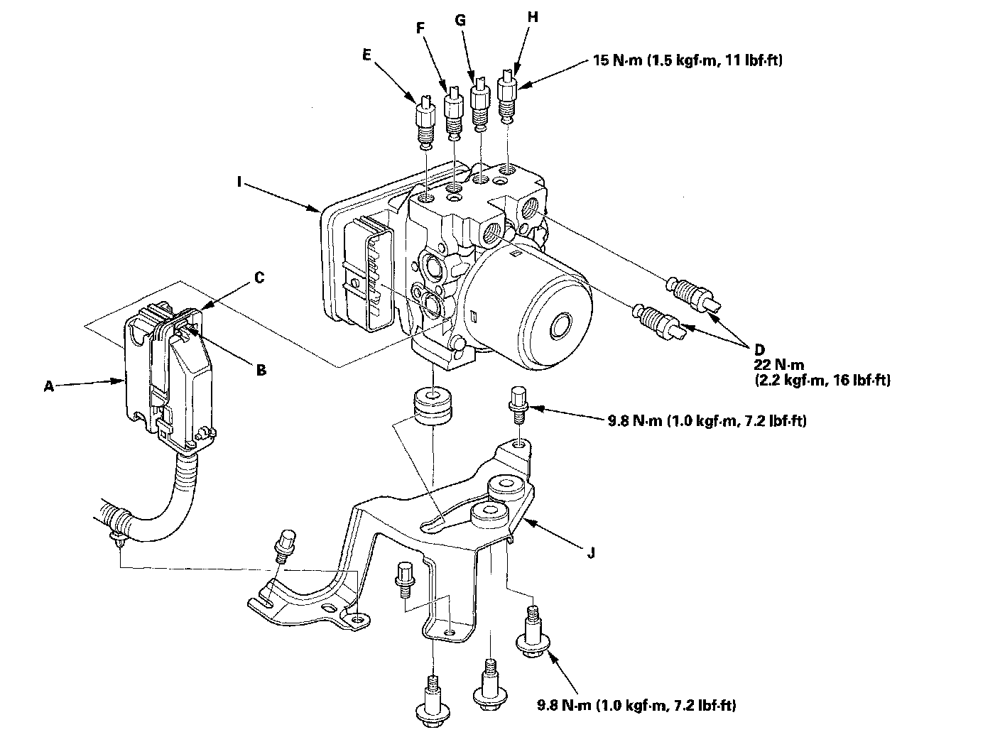

Electronic Brake Control Module: Service and Repair
VSA Modulator-Control Unit Removal and InstallationNOTE:
^ Do not spill brake fluid on the vehicle; it may damage the paint; if brake fluid gets on the paint, wash it off immediately with water.
^ Be careful not to damage or deform the brake lines during removal and installation.
^ To prevent the brake fluid from flowing, plug and cover the hose ends and joints with a shop towel or equivalent material.
Removal
1. Disconnect the VSA modulator-control unit 37P connector (A) by pushing the lock (B) and pulling down the lever (C); the connector disconnects it self.

2. Disconnect the six brake lines from the VSA modulator-control unit.
NOTE: Brake lines are connected to the master cylinder (D) and to the right-front (E), the left-rear (F), the right-rear (G), and the left-front (H) brake systems.
3. Remove the VSA modulator-control unit (I) with the bracket (J) from the body.
4. Remove the VSA modulator-control unit from the bracket.
Installation
1. Install the VSA modulator-control unit on the bracket.
2. Install the bracket with the VSA modulator-control unit to body.
3. Reconnect the six brake lines, then tighten the flare nuts to the specified torque.
4. Align the connecting surface of the VSA modulator-control unit 37P connector to the VSA modulator-control unit.
5. Pull up the lever of the VSA modulator-control unit 37P connector, then confirm the connector is fully seated.
6. Bleed the brake system.
7. Perform VSA sensor neutral position memorization.
8. Start the engine, and check that the ABS and the VSA indicators go off.
9. Test-drive the vehicle, and check that the ABS, and the VSA indicators do not come on.
NOTE: If the brake pedal is spongy, there may be air trapped in the modulator and then induced into the normal brake system during modulation. Bleed the brake system again.